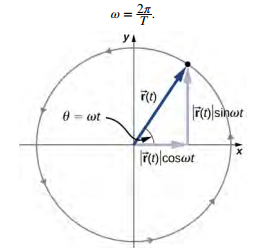

There are two types of circular motion: uniform and non-uniform circular motion.
A particle is in uniform circular motion if it travels around a circle or a circular arc at constant (uniform) speed. Although the speed does not vary, the particle is accelerating because the velocity changes in direction.
Suppose a particle is travelling in a circle as shown in the image then its position vector $\vec{r}(t)$ is given by, $$\vec{r}(t) = r \cos(\omega t) \hat{i} + r \sin(\omega t) \hat{j} \tag{1}$$

Where $\omega$ is called angular frequency of the particle. The angular frequency has units of radians (rad) per second and is simply the number of radians of angular measure through which the particle passes per second. The angle that the position vector has at any particular time is $t$.
If $T$ is the period of motion, or the time to complete one revolution ($2\pi \, rad$), then $$\omega = \frac{2 \pi}{T}.$$
Velocity vector, $\vec{v}$, can be obtained from (1) as, $$\vec{v}(t) = \frac{d \vec{r}(t)}{dt} = - r \omega \sin(\omega t) \hat{i} + r \omega \cos(\omega t) \hat{j} \tag{2}$$
Acceleration vector, $\vec{a}$, can be obtained from (2) as,
$$\begin{align*} \vec{a}(t) &= \frac{d \vec{v}(t)}{dt} \\ &= - r \omega^2 \cos(\omega t) \hat{i} - r \omega^2 \sin(\omega t) \hat{j} \\ \vec{a}(t) &= - r \omega^2 \, \vec{r}(t) \tag{3} \end{align*}$$
In Non-Uniform Circular Motion, circular motion does not have to be at a constant speed. A particle can travel in a circle and speed up or slow down, showing an acceleration in the direction of the motion.
In uniform circular motion, the particle executing circular motion has a constant speed. If the speed of the particle is changing, the we introduce an additional acceleration in the direction tangential to the circle and is called tangential acceleration ($a_{t}$). And the acceleration in $(3)$ is called centripetal acceleration ($a_c$).
Let's clear up the confusion by looking at what "acceleration" actually does in physics.
In any curved motion, acceleration has two distinct responsibilities. Think of them as two different "commands" given to the particle:
The "Turn" Command (Centripetal Acceleration, $a_c$): This acceleration is responsible only for changing the direction of the velocity. Even if the speed is a rock-steady 5 m/s, if the particle is moving in a circle, its direction is changing every millisecond. To force that change in direction, you must have an acceleration pointing toward the center.
The "Push" Command (Tangential Acceleration, $a_t$): This acceleration is responsible only for changing the magnitude (speed) of the velocity. This is what you feel when you floor the gas pedal in a car.
You may ask: "Then why doesn't the particle have only acceleration tangential to the position vector?"
If the particle only had tangential acceleration, it would be moving in a straight line while speeding up.
Think about rope analogy:
The Rope (Centripetal): If you are swinging a ball on a rope, the tension in the rope pulls the ball toward your hand. This is $a_c$. If the rope snaps, $a_c$ vanishes, and the ball flies off in a straight line.
The "Kick" (Tangential): Now imagine your friend runs by and kicks the ball in the direction it’s already moving while it's still on the rope. The ball speeds up. That kick provided $a_t$
Crucial Point: As long as the path is a circle, you must have centripetal acceleration to keep it from flying away. If you are also changing speed, you also have tangential acceleration.
In Non-Uniform Circular Motion, the total acceleration vector ($\vec{a}$) is the vector sum of both:
$$\vec{a}_{total} = \vec{a}_c + \vec{a}_t$$
Because these two components are always perpendicular to each other, we can find the total magnitude using the Pythagorean theorem:
$$a = \sqrt{a_c^2 + a_t^2}$$
Since in this circular motion, speed isn't constant that means angular frequency isn't constant as well as it was in uniform circular motion. Intuitively, how much particle will travel around a circle depends very much on its speed, right?
In equations (1), (2) and (3), we used.
$$\begin{align*} \vec{r}(t) &= r \cos(\theta(t)) \hat{i} + r \sin(\theta(t)) \hat{j} \tag{4} \\ \vec{v}(t) &= \frac{d \vec{r}(t)}{dt} \\ &= r \theta'(t) (- \sin(\theta(t)) \hat{i} + \cos(\theta(t)) \hat{j})\tag{5} \end{align*}$$